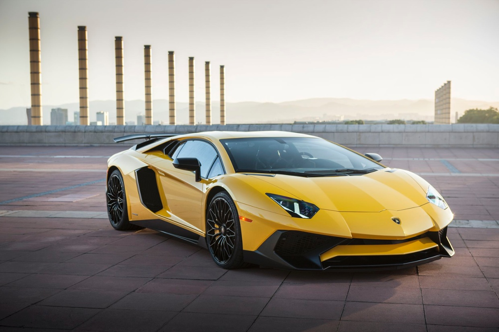
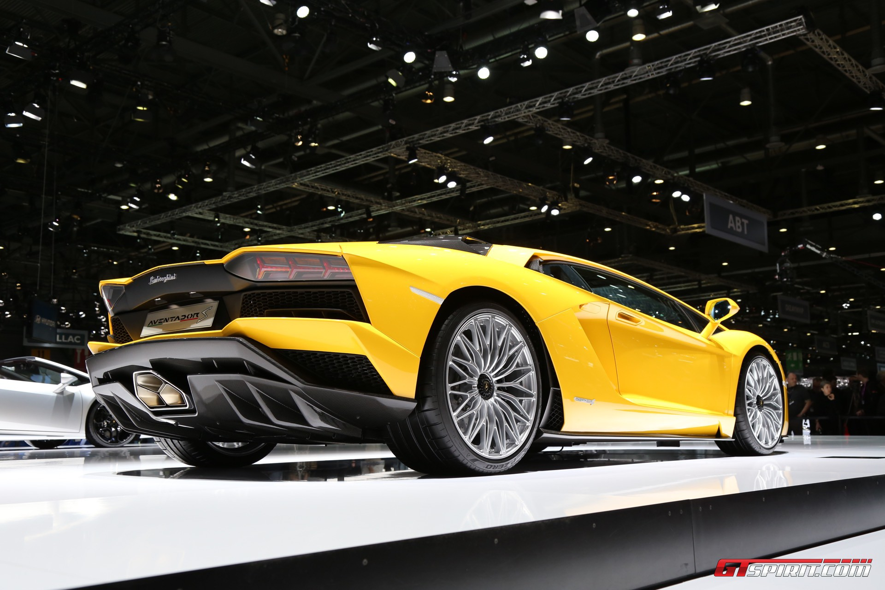
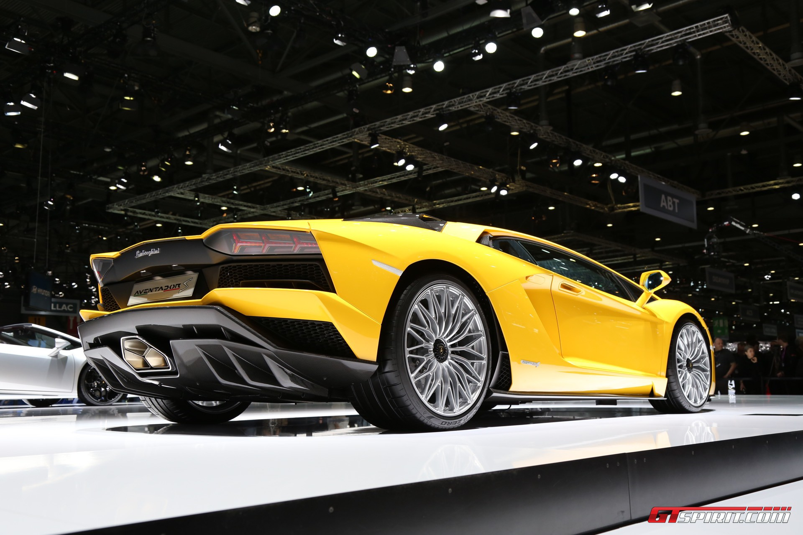
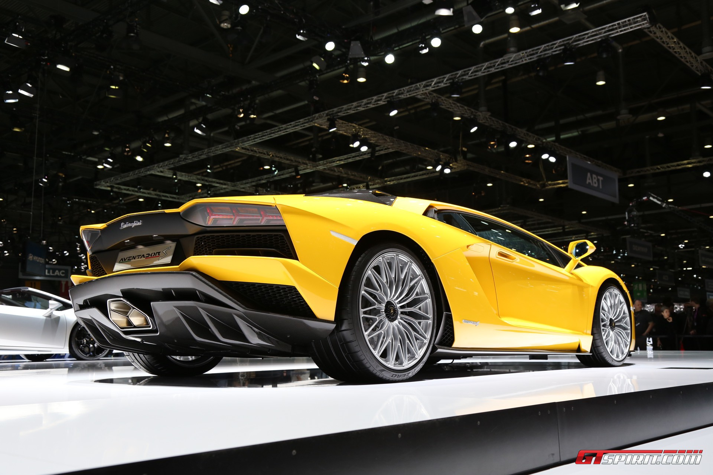

DISCOVER
THE EXEMPLARY GRAND TOURER
Thiết kế của Aventador S rõ ràng cho thấy thế hệ Aventador mới. Aventador S có một số sự phát triển bên ngoài, đặc biệt là ở phía trước và phía sau, trong khi hồ sơ của nó vẫn rõ ràng là Aventador. Mỗi bộ phận cải tiến được thiết kế lại cho một mục đích, đạt được hiệu quả khí động học tối đa, đồng thời nhấn mạnh tính năng động, năng động, cơ bắp của Aventador. Hơn nữa, Lamborghini Centro Stile đã tích hợp một cách thông minh một số yếu tố của các biểu tượng trong quá khứ, chẳng hạn như các đường cong của bánh xe phía sau vòm gợi nhớ lại Countach ban đầu..

 

